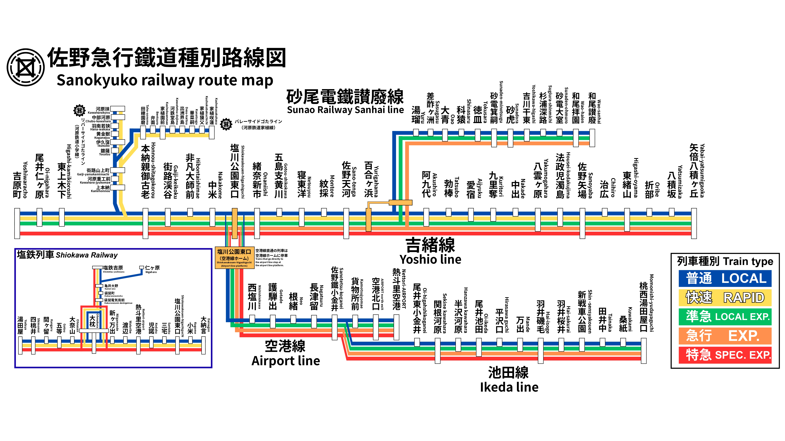

◇運行情報◇
最新の運行情報を得るにはボタンをクリック
ミスがあっても隠蔽しない。少しずつでもいいから、一緒に歩もう。
「低クオリティのままでいいんだよ。無理に成長して隠蔽するよりずっとまともだし、えらいよ。」
By サノス・ナオ
佐野鐡グループ車両紹介
EC 1030系
佐野鐡線の電化区間での運用に入る通勤車で、普通から特急まで幅広い運用を持つ。
DC 3680系
佐野鐡線の非電化区間での運用に入る近郊車で、主に普通や快速、準急の運用を持つ。
〜あの空に、虹をかけよう〜
最新の運行情報を得るにはボタンをクリック
「低クオリティのままでいいんだよ。無理に成長して隠蔽するよりずっとまともだし、えらいよ。」
By サノス・ナオ
佐野鐡線の電化区間での運用に入る通勤車で、普通から特急まで幅広い運用を持つ。
佐野鐡線の非電化区間での運用に入る近郊車で、主に普通や快速、準急の運用を持つ。
佐野急行鐵道線とその直通先の路線図です。画像をクリックすると拡大してご覧いただけます。PDF版はダウンロードして印刷も可能です。

※拡大するには画像をクリック